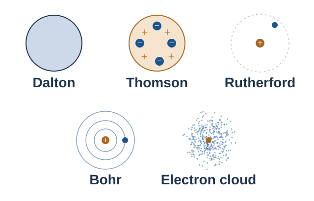
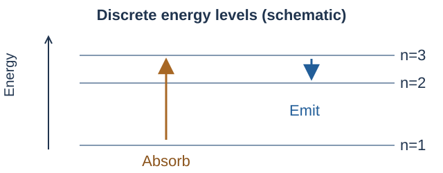

ทวนแล้วควรทำได้: เปรียบเทียบแบบจำลอง 5 แบบ เชื่อมหลักฐานกับข้อสรุป และอธิบายการดูด–คายพลังงานของอิเล็กตรอน · อ่านทวนประมาณ 7–10 นาที แล้วลองตอบเอง
ภาพรวม: แบบจำลองเปลี่ยนตามหลักฐาน

| แบบจำลอง | ใจความที่ต้องจำ | หลักฐาน / ข้อจำกัด |
|---|---|---|
| ดอลตัน Dalton | อะตอมเป็นทรงกลมตัน แบ่งแยกไม่ได้ตามแนวคิดเดิม สารประกอบเกิดจากอะตอมต่างธาตุรวมกันในอัตราส่วนจำนวนเต็มอย่างง่าย ปฏิกิริยาเคมีเป็นการจัดเรียงอะตอมใหม่ ไม่สร้างหรือทำลายอะตอม | อธิบายกฎทางเคมีได้ แต่การค้นพบอนุภาคย่อยและไอโซโทปทำให้ต้องแก้แนวคิดเรื่องแบ่งแยกไม่ได้และมวลเท่ากันทุกอะตอมของธาตุเดียวกัน |
| ทอมสัน Thomson | อิเล็กตรอนประจุลบฝังอยู่ในเนื้อประจุบวกที่กระจายทั่วอะตอม อะตอมโดยรวมเป็นกลาง | รังสีแคโทดเป็นหลักฐานของอิเล็กตรอน แต่แบบจำลองนี้อธิบายการกระเจิงมุมใหญ่ของอนุภาคแอลฟาไม่ได้ |
| รัทเทอร์ฟอร์ด Rutherford | ประจุบวกและมวลเกือบทั้งหมดรวมอยู่ในนิวเคลียสขนาดเล็ก อิเล็กตรอนอยู่รอบนิวเคลียส ปริมาตรส่วนใหญ่เป็นที่ว่าง | อธิบายผลแผ่นทองคำได้ แต่ยังอธิบายเสถียรภาพของอะตอมและสเปกตรัมเส้นไม่ได้ |
| โบร์ Bohr | อิเล็กตรอนมีพลังงานเฉพาะค่า ในแบบจำลองนี้อยู่ได้ในวงโคจรที่กำหนด และไม่แผ่พลังงานขณะอยู่ในสถานะเดิม | อธิบายสเปกตรัมของ H และระบบหนึ่งอิเล็กตรอนได้ดี แต่ใช้กับอะตอมหลายอิเล็กตรอนได้ไม่ครบถ้วน |
| กลุ่มหมอก Quantum model | ใช้การกระจายความน่าจะเป็นอธิบายตำแหน่งอิเล็กตรอน ไม่กำหนดวงโคจรแน่นอนแบบโบร์ | ออร์บิทัลแสดงบริเวณที่มีโอกาสพบอิเล็กตรอนสูง ความหนาแน่นของจุดสื่อความน่าจะเป็นต่อปริมาตร |
หลักคิด: แบบจำลองเป็นคำอธิบายจากหลักฐาน เมื่อมีผลทดลองที่อธิบายไม่ได้จึงปรับปรุงแบบจำลอง ไม่ใช่ภาพถ่ายโดยตรงของอะตอม
ผลการทดลอง → ข้อสรุปที่ต้องเชื่อมให้ได้
รังสีแคโทดและหยดน้ำมัน
- ลำรังสีเบนเข้าหาแผ่นบวกในสนามไฟฟ้า → อนุภาคมีประจุลบ
- เปลี่ยนชนิดแก๊สหรือโลหะแคโทดแล้วยังได้อัตราส่วนขนาดประจุต่อมวลเดิม → อิเล็กตรอนเป็นองค์ประกอบร่วมของอะตอม
- ทอมสัน: หาอัตราส่วน \(e/m_e\) · มิลลิแกน: หาขนาดประจุอิเล็กตรอนจากหยดน้ำมัน ทำให้หา \(m_e\) ต่อได้จากอัตราส่วนเดิม โดย \(e/m_e\approx1.76\times10^{11}\,\mathrm{C\,kg^{-1}}\) และ \(e\approx1.60\times10^{-19}\,\mathrm{C}\)
การกระเจิงอนุภาคแอลฟาผ่านแผ่นทองคำบาง
| สิ่งที่สังเกต | ข้อสรุป |
|---|---|
| ส่วนใหญ่ผ่านตรง | อะตอมมีปริมาตรส่วนใหญ่เป็นที่ว่าง |
| บางส่วนเบนทิศ | อนุภาคแอลฟาประจุบวกถูกผลักเมื่อเข้าใกล้บริเวณประจุบวก |
| น้อยมากเบนมุมใหญ่หรือย้อนกลับ | มีบริเวณเล็กมากที่ประจุบวกและมวลกระจุกตัวหนาแน่น คือนิวเคลียส |
ระวัง: การย้อนกลับไม่ได้หมายถึงชนทรงกลมตันของอะตอม และการทดลองแผ่นทองคำไม่ได้ค้นพบนิวตรอน
โบร์: สเปกตรัมเส้นกับระดับพลังงาน
สถานะพื้น: สถานะพลังงานต่ำสุด · สถานะกระตุ้น: มีพลังงานสูงกว่าสถานะพื้น

โฟตอนมีพลังงาน \(E_{\text{photon}}=h\nu=hc/\lambda=|E_f-E_i|\) โดย \(\Delta E_{\text{atom}}=E_f-E_i\): ดูดพลังงานได้ค่าบวก คายพลังงานได้ค่าลบ แต่พลังงานโฟตอนเป็นบวกเสมอ
ระดับพลังงานมีค่าไม่ต่อเนื่อง → ผลต่างพลังงานมีเฉพาะบางค่า → เกิดสเปกตรัมเส้นซึ่งเป็นลักษณะเฉพาะของธาตุ ต่างจากสเปกตรัมต่อเนื่องที่มีความยาวคลื่นต่อเนื่องกัน
จำความสัมพันธ์: ผลต่างพลังงานมาก → ความถี่สูง → ความยาวคลื่นสั้น; อย่าตัดสินพลังงานจากจำนวนขั้นที่ข้ามเพียงอย่างเดียว เพราะช่วงห่างแต่ละระดับไม่เท่ากัน
สำหรับอะตอม H ในแบบจำลองโบร์: \(E_n=-2.18\times10^{-18}/n^2\,\mathrm{J}\) โดย \(n=1,2,3,\ldots\) และ \(n=1\) เป็นสถานะพื้น
กลุ่มหมอก: ออร์บิทัลไม่ใช่วงโคจร
วงโคจร (orbit) เป็นเส้นทางที่กำหนดในแบบจำลองโบร์ ส่วนออร์บิทัล (orbital) ใช้อธิบายการกระจายความน่าจะเป็นของอิเล็กตรอน โดยมักแสดงเป็นบริเวณที่มีโอกาสพบอิเล็กตรอนสูง ไม่ใช่เส้นทางวิ่ง
จุดหนาแน่นกว่าในปริมาตรเท่ากัน → โอกาสพบอิเล็กตรอนมากกว่า กลุ่มหมอกไม่ใช่เมฆของสสารและไม่ได้หมายความว่าอิเล็กตรอนแตกเป็นจุดเล็ก ๆ
ลองตอบด้วยตนเอง
ลองตอบจากความจำก่อน แล้วเปิดเฉลยเพื่อตรวจเหตุผล ซ่อนเฉลยทั้งหมดเมื่อต้องการพิมพ์ฉบับนักเรียน
คำถาม 1 — จำแบบจำลองให้ได้
เติมชื่อแบบจำลองที่ตรงกับใจความแต่ละแถว
| ใจความของแบบจำลอง | ชื่อแบบจำลอง |
|---|---|
| ประจุลบฝังในเนื้อประจุบวก | ____________ |
| พลังงานเฉพาะค่าและวงโคจรที่กำหนด | ____________ |
| ทรงกลมตันแบ่งแยกไม่ได้ตามแนวคิดเดิม | ____________ |
| การกระจายความน่าจะเป็นของอิเล็กตรอน | ____________ |
| นิวเคลียสเล็กและปริมาตรส่วนใหญ่เป็นที่ว่าง | ____________ |
เฉลย: จากบนลงล่าง: ทอมสัน → โบร์ → ดอลตัน → กลุ่มหมอก → รัทเทอร์ฟอร์ด
คำถาม 2 — แยกหลักฐานกับสิ่งที่วัดได้
ก. รังสีแคโทดเบนเข้าหาแผ่นบวก บอกอะไรเกี่ยวกับอนุภาค?
ข. ทอมสันและมิลลิแกนหาอะไรได้ต่างกัน และใช้ร่วมกันหาอะไรต่อได้?
เฉลย: ก. อนุภาคมีประจุลบ เพราะถูกแผ่นบวกดึงดูด
ข. ทอมสันหาอัตราส่วน \(e/m_e\) ส่วนมิลลิแกนหาขนาดประจุ \(e\) เมื่อรู้ทั้งคู่จึงหา \(m_e=e/(e/m_e)\) ได้ โดย \(e\) หมายถึงขนาดประจุที่เป็นบวก ไม่ใช่ประจุอิเล็กตรอนซึ่งเป็น \(-e\)
คำถาม 3 — อ่านผลแผ่นทองคำ
อธิบายว่า “ส่วนใหญ่ผ่านตรง” และ “น้อยมากย้อนกลับ” สนับสนุนโครงสร้างอะตอมอย่างไร และการทดลองนี้ยืนยันว่ามีนิวตรอนแล้วหรือไม่?
เฉลย: ส่วนใหญ่ผ่านตรงบ่งชี้ว่าปริมาตรส่วนใหญ่เป็นที่ว่าง น้อยมากเบนมุมใหญ่หรือย้อนกลับบ่งชี้ว่ามีบริเวณประจุบวกและมวลหนาแน่นมากแต่ขนาดเล็ก คือนิวเคลียส การทดลองนี้ยังไม่ได้ยืนยันนิวตรอน; หลักฐานของนิวตรอนมาภายหลังจากงานของแชดวิก
คำถาม 4 — ดูดหรือคาย และคำนวณโฟตอน
ก. \(n=1\rightarrow3\) กับ \(n=3\rightarrow2\) อย่างใดดูดและอย่างใดคายพลังงาน?
ข. โฟตอน 400 nm กับ 600 nm อย่างใดมีพลังงานมากกว่า?
ค. หาพลังงานโฟตอนความยาวคลื่น 500 nm ให้ \(h=6.63\times10^{-34}\,\mathrm{J\,s}\), \(c=3.00\times10^8\,\mathrm{m\,s^{-1}}\) และ \(1\,\mathrm{nm}=10^{-9}\,\mathrm{m}\)
เฉลย: ก. \(1\rightarrow3\) ดูดพลังงาน และ \(3\rightarrow2\) คายพลังงาน เพราะพลังงานเพิ่มและลดตามลำดับ
ข. 400 nm มีพลังงานมากกว่า เพราะ \(E\propto1/\lambda\)
ค. \(\lambda=500\times10^{-9}=5.00\times10^{-7}\,\mathrm{m}\)
\[E=\frac{hc}{\lambda}=\frac{(6.63\times10^{-34})(3.00\times10^8)}{5.00\times10^{-7}}=3.98\times10^{-19}\,\mathrm{J}\]นี่คือพลังงานต่อโฟตอน ไม่ใช่ต่อโมล และไม่ได้ระบุว่าเป็นเส้นสเปกตรัมของ H
คำถาม 5 — แก้ความเข้าใจคลาดเคลื่อน
ก. “ออร์บิทัลเป็นวงโคจรที่อิเล็กตรอนวิ่งตามแน่นอน” แก้อย่างไร?
ข. ไอโซโทปทำให้ข้อความใดของแนวคิดดอลตันต้องปรับ และธาตุเดียวกันพิจารณาจากอะไร?
เฉลย: ก. ออร์บิทัลอธิบายการกระจายความน่าจะเป็นของอิเล็กตรอน ไม่ใช่เส้นทางแน่นอน ภาพกลุ่มหมอกแสดงบริเวณที่มีโอกาสพบอิเล็กตรอน
ข. ต้องปรับข้อความที่ว่าอะตอมทุกอะตอมของธาตุเดียวกันมีมวลเท่ากัน เพราะไอโซโทปมีจำนวนนิวตรอนต่างกัน ส่วนชนิดของธาตุกำหนดด้วยจำนวนโปรตอนหรือเลขอะตอม ไม่ใช่มวล
แหล่งศึกษาต่อและตรวจสอบ
สสวท. / IPST Project 14: ดอลตัน / Dalton · ทอมสัน / Thomson · รัทเทอร์ฟอร์ด / Rutherford · โบร์ / Bohr · กลุ่มหมอก / Electron cloud
IPST eBook · OpenStax: Atomic theory, Bohr model, Quantum model
สรุป คำถาม และภาพจัดทำใหม่ อิงหัวข้อของ สสวท. และตรวจแนวคิดการทดลองกับตำรา OpenStax ไม่คัดลอกแบบฝึกหัดต้นฉบับ
After reviewing, you should be able to: compare five atomic models, connect evidence to conclusions, and explain electron energy absorption and emission. Allow about 7–10 minutes to read, then answer from memory.
Overview: models change with evidence
| Model | Remember | Evidence / limitation |
|---|---|---|
| Dalton | Atoms were pictured as indivisible solid spheres. Compounds contain atoms of different elements in simple whole-number ratios. Ordinary chemical reactions rearrange atoms without creating or destroying them. | Explained chemical laws, but subatomic particles and isotopes required revision of indivisibility and equal masses for all atoms of one element. |
| Thomson | Negative electrons are embedded in positive matter spread throughout a neutral atom. | Cathode rays provided evidence for electrons. This model could not explain large-angle alpha-particle scattering. |
| Rutherford | Positive charge and almost all mass are concentrated in a tiny nucleus, with electrons outside. Most atomic volume is empty space. | Explained gold-foil scattering, but did not explain atomic stability or line spectra. |
| Bohr | Electrons occupy allowed orbits with specific energies. In this model, an electron does not radiate while remaining in an allowed state. | Explains H and other one-electron systems well, but does not fully describe many-electron atoms. |
| Electron cloud Quantum model | Describes electron position using a probability distribution, rather than definite Bohr orbits. | Orbital diagrams show regions of high probability. Dot density represents probability per unit volume. |
Key idea: a model explains evidence. New observations that it cannot explain can lead to a revised model. A model is not a direct photograph of an atom.
Connect each observation to its conclusion
Cathode rays and oil drops
- A beam bends towards the positive plate in an electric field → its particles carry negative charge.
- The same charge-magnitude-to-mass ratio is obtained with different gases and cathode metals → electrons are common components of atoms.
- Thomson: measured \(e/m_e\). Millikan: determined the electron's charge magnitude from oil drops. Combining them gives \(m_e\). Remember \(e/m_e\approx1.76\times10^{11}\,\mathrm{C\,kg^{-1}}\) and \(e\approx1.60\times10^{-19}\,\mathrm{C}\).
Alpha particles passing through thin gold foil
| Observation | Conclusion |
|---|---|
| Most pass straight through. | Most atomic volume is empty space. |
| Some are deflected. | Positive alpha particles are repelled near a region of positive charge. |
| Very few scatter through large angles or turn back. | Positive charge and mass are concentrated in a very small, dense region: the nucleus. |
Take care: turning back does not mean striking a solid atomic sphere. The gold-foil experiment did not discover the neutron.
Bohr: line spectra and energy levels
Ground state: the lowest-energy state. Excited state: a state above the ground state.
A photon's energy is \(E_{\text{photon}}=h\nu=hc/\lambda=|E_f-E_i|\). For the atom, \(\Delta E_{\text{atom}}=E_f-E_i\) is positive for absorption and negative for emission. Photon energy is always positive.
Discrete allowed energies → only certain energy differences → a characteristic line spectrum. A continuous spectrum instead contains an unbroken range of wavelengths.
Remember: a larger energy difference means higher frequency and shorter wavelength. Do not compare energies by counting levels alone: successive energy gaps are not equal.
For a hydrogen atom in the Bohr model: \(E_n=-2.18\times10^{-18}/n^2\,\mathrm{J}\), with \(n=1,2,3,\ldots\); \(n=1\) is the ground state.
Electron cloud: an orbital is not an orbit
An orbit is a definite path in Bohr's model. An orbital describes an electron's probability distribution and is often represented by a region where the electron is likely to be found. It is not a track.
More dots within equal volumes indicate greater probability. The cloud is not a material mist, and an electron has not broken into many tiny dots.
Try it yourself
Answer from memory, then show the answers to check your reasoning. Hide all answers to print a student copy.
Question 1 — Identify the models
Write the model that matches each description.
| Key description | Model |
|---|---|
| Negative electrons embedded in positive matter | ____________ |
| Specific energies and allowed orbits | ____________ |
| Originally described as indivisible solid spheres | ____________ |
| Electron probability distribution | ____________ |
| Tiny nucleus; mostly empty space | ____________ |
Answer: from top to bottom: Thomson → Bohr → Dalton → electron cloud → Rutherford.
Question 2 — Evidence and measurements
a. What does the deflection of cathode rays towards a positive plate tell you?
b. What different quantities did Thomson and Millikan determine, and what can be calculated by combining them?
Answer: a. The particles have negative charge, since they are attracted to the positive plate.
b. Thomson determined \(e/m_e\); Millikan determined \(e\). Combining them gives \(m_e=e/(e/m_e)\). Here \(e\) is the positive charge magnitude; the electron charge is \(-e\).
Question 3 — Interpret gold-foil scattering
Explain the atomic structure implied by “most particles pass straight through” and “very few turn back.” Did this experiment establish the existence of neutrons?
Answer: most passing straight through indicates that most atomic volume is empty space. Rare large deflections or backward scattering indicate a tiny region of concentrated positive charge and mass: the nucleus. This experiment did not establish neutrons; evidence for neutrons came later from Chadwick.
Question 4 — Absorption, emission and photon energy
a. Which transition absorbs energy and which emits: \(n=1\rightarrow3\) or \(n=3\rightarrow2\)?
b. Which photon has more energy: 400 nm or 600 nm?
c. Calculate the energy of a 500 nm photon. Use \(h=6.63\times10^{-34}\,\mathrm{J\,s}\), \(c=3.00\times10^8\,\mathrm{m\,s^{-1}}\) and \(1\,\mathrm{nm}=10^{-9}\,\mathrm{m}\).
Answer: a. \(1\rightarrow3\) absorbs energy; \(3\rightarrow2\) emits energy, as electron energy increases and decreases, respectively.
b. The 400 nm photon has more energy because \(E\propto1/\lambda\).
c. \(\lambda=500\times10^{-9}=5.00\times10^{-7}\,\mathrm{m}\).
\[E=\frac{hc}{\lambda}=\frac{(6.63\times10^{-34})(3.00\times10^8)}{5.00\times10^{-7}}=3.98\times10^{-19}\,\mathrm{J}\]This is energy per photon, not per mole. The question does not identify it as a hydrogen spectral line.
Question 5 — Correct the misconceptions
a. Correct: “An orbital is a definite track followed by an electron.”
b. Which part of Dalton's original theory requires revision because of isotopes? What determines whether atoms belong to the same element?
Answer: a. An orbital describes an electron's probability distribution, not a definite track. Cloud diagrams show where an electron is likely to be found.
b. The claim that all atoms of one element have equal mass requires revision: isotopes have different neutron numbers. Element identity is determined by proton number (atomic number), not mass.
Sources and further study
สสวท. / IPST Project 14: ดอลตัน / Dalton · ทอมสัน / Thomson · รัทเทอร์ฟอร์ด / Rutherford · โบร์ / Bohr · กลุ่มหมอก / Electron cloud
IPST eBook · OpenStax: Atomic theory, Bohr model, Quantum model
Original summary, questions and schematic figures, aligned with IPST topics and checked against OpenStax. Textbook exercises are not reproduced.